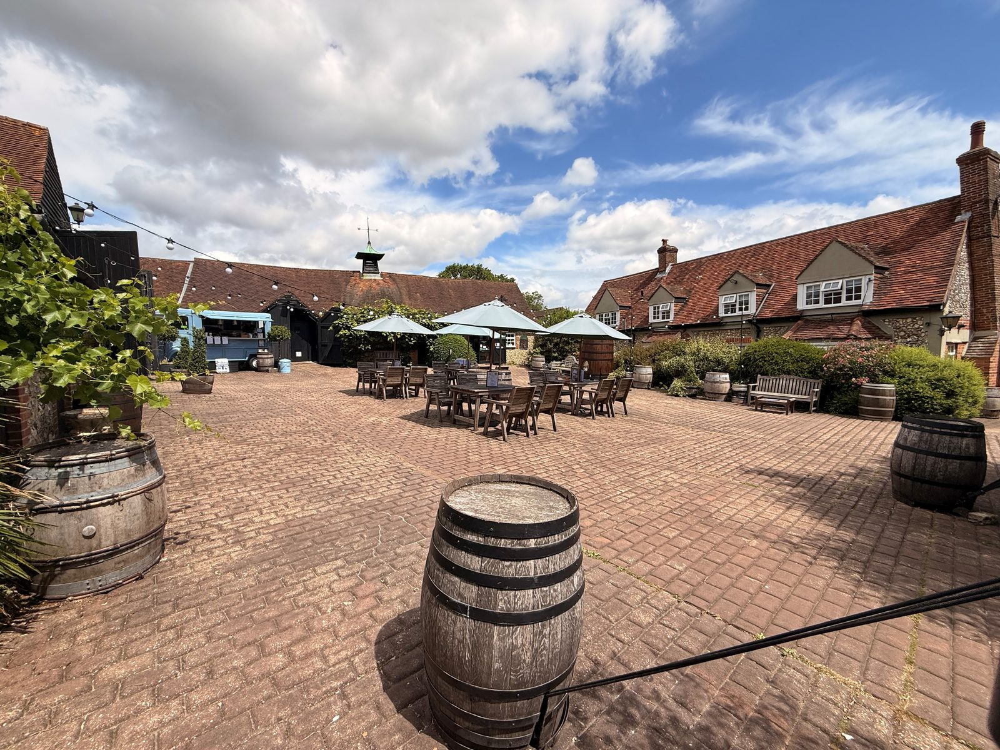

Oxfordshire
Chiltern Valley Winery
Estate-verified · November 2026
A winery, brewery and liqueur maker at Old Luxters in the Chiltern Hills, with tours most days that head out into the vines, a shop open seven days a week and a food truck in the courtyard.

The visit
Chiltern Valley is an easy drop-in as well as a tour: the shop and food truck are open every day, and the tours run most days of the week.
Winery, brewery and liqueur tour
Runs most days, weekdays and weekends: about 1.5 to 2 hours behind the scenes, finishing with a tutored tasting. Book on Chiltern Valley’s tours page.
Out among the vines
The tour virtually always goes into the vineyard, unless, in the estate’s words, it’s blowing a hooley.
Shop and food truck
The shop is open 7 days a week, 9am to 5pm. The food and coffee truck is open every day 10am to 4pm (10am to 1pm on event days). No booking needed.
Tours are adults only
No dogs and no under-18s on tours.
Stay the night
There is a B&B on site, and a room can be added to a tour booking.
There is no station nearby: take the train to Henley-on-Thames and a taxi from there. The estate uses Henley Taxi.
Common questions
Do Chiltern Valley tours go into the vineyard?
Virtually always, unless the weather is very wild.
Can I visit Chiltern Valley without booking a tour?
Yes. The shop is open 7 days a week, 9am to 5pm, and the food truck every day 10am to 4pm.
Are children or dogs allowed on Chiltern Valley tours?
No. Tours are for over-18s only, and dogs aren’t allowed.
How do I get to Old Luxters without a car?
Take the train to Henley-on-Thames and a taxi from the station.
At a glance
- Where
- Old Luxters, near Henley-on-Thames, Oxfordshire
- Tours
- Most days, 1.5–2 hours
- Shop
- Daily 9–5
- Food truck
- Daily 10–4 (10–1 on event days)
- Tours
- Over-18s only, no dogs
- Stay
- B&B on site (from their website)
- By train
- Henley-on-Thames, then taxi
Also in Berkshire, Bucks & Oxfordshire
- Fairmile Vineyard Henley-on-Thames
- Harrow & Hope Marlow
- Stanlake Park Twyford
- Marlow Valley Vineyard Marlow